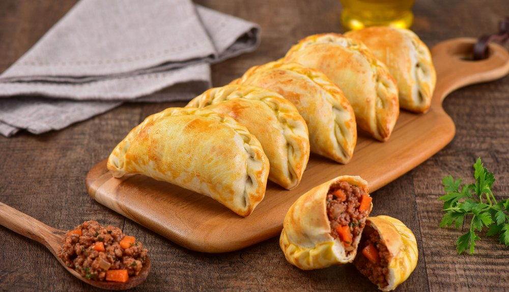

Odin Recipes
Empanada

This is the recipe for meat empanadas, which is a type of baked or fried turnover
consisting of pastry and filling.
Ingredients=
*(for a dozen of empanadas)
- 12 empanada covers
- 1/2 kg. minced meat
- 2 onions
- 2 cloves of garlic
- 1/2 red bell pepper
- 1 tomato
- 2 tbsp. tomato puree
- 1 handful of olives
- Peppers
- Cumin
- Salt and pepper
Steps to follow=
- In a pot with hot oil, add the onion and bell pepper. Let it brown for a few minutes
and when they are half cooked (transparent onion), add the garlic and a little
salt and pepper.
- Increase the heat and add all the minced meat at once. Move the meat so that it does
not stick. When the meat is sealed, add the diced tomato and 2 tablespoons of tomato
puree. Season with paprika and cumin, a little more salt and pepper and mix well. Cover
(not completely, leave a small space) and let cook for half an hour, stirring
little by little.
- Remove from heat and let cool in the pot. Add the chopped olives and mix well.
(In this step you can add anything else you want to add: hard-boiled egg, raisins, potato,
etc).
- Distribute the filling among the empanada covers, and close with a traditional repulgue.
Before putting them in the oven you can paint them with egg, but it is very comfortable and
optional.
- Put our meat empanadas on a plate and bake at high temperature until they get golden brown.
Now it's time to enjoy!
That's all!
You can read the other recipes on the home page.
Home - About
-franngo 2024